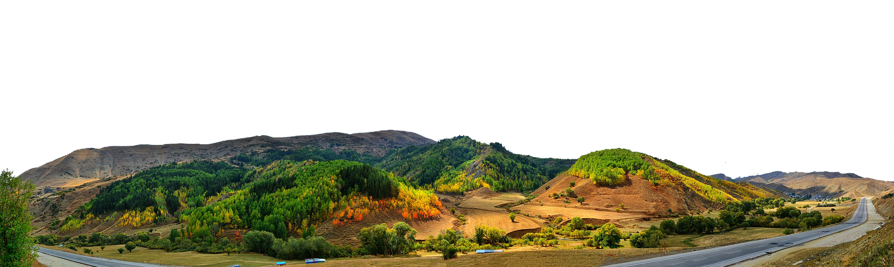
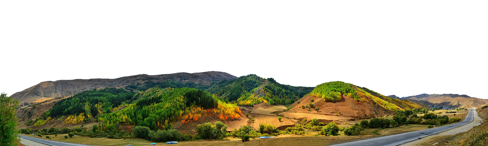
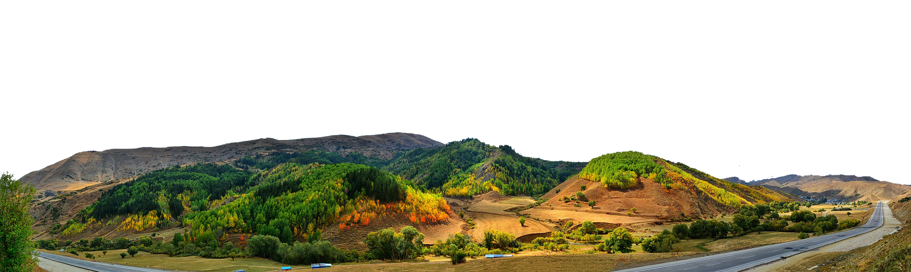
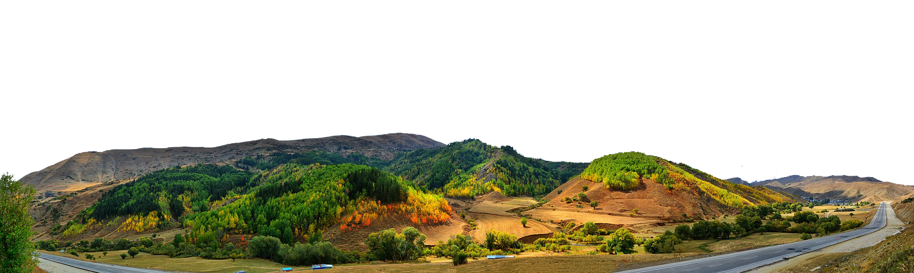

 

People call New Zealand “clean and green” but with a bit of research it doesn’t appear that it will stay this way for very long in the future if climate change keeps up as it is currently, from some research scientists have found that the overall temperature could increase from 0.7°c to 1°c in 2040. It has also been predicted that by 2040 there could be up to a 100% increase in hot days (25°C or over, and by 2090 this number could be bumped up to 300% increase in hot days, that’s 4x the current amount of days that have been over 25°C.